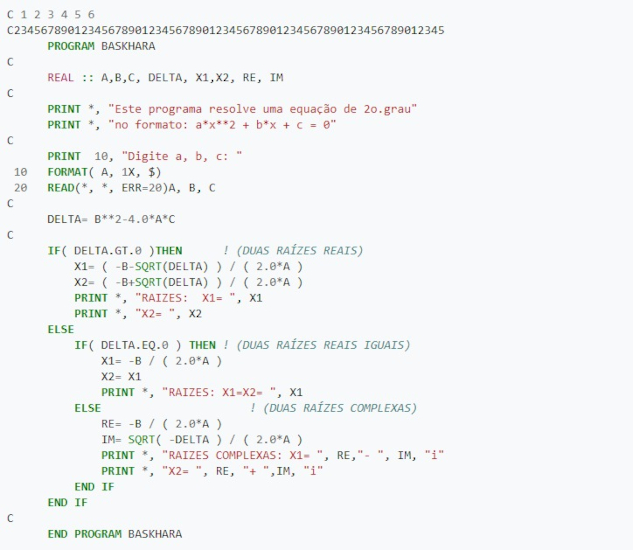
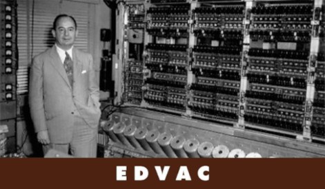

FORTRAN
- O nome é um acrônimo da expressão "IBM Mathematical FORmula TRANslation System"
- Foi a primeira linguagem de programação imperativa. O primeiro compilador de FORTRAN foi desenvolvido para o IBM 704 entre os anos de 1954-57, por uma equipe da IBM, ficando pronto em Abril de 1957
- A linguagem Fortran é principalmente usada em Ciência da computação e Análise numérica. Apesar de ter sido inicialmente uma linguagem de programação procedural, versões recentes de Fortran possuem características que permitem suportar programação orientada por objetos
1957 - FORTRAN I
- O primeiro rascunho ficou pronto em 10 de Novembro de 1954
- O primeiro compilador começou a ser desenvolvido no começo de 1955
- Entre Junho-Setembro de 1956 estava claro para a equipe de desenvolvimento que o compilador estava quase pronto, então em 15 de Outubro de 1956 foi publicado o primeiro manual de FORTRAN: Programmer's Reference Manual
- Em Abril de 1957 o compilador foi concluído e distribuído para todos os clientes do IBM 704
1958 - FORTRAN II
- No segundo semestre de 1957 os desenvolvedores já tinham noção de que precisariam corrigir várias deficiências encontradas no FORTRAN I
- O FORTRAN II foi distribuído entre Junho-Setembro de 1958
- Entre as deficiências estava a falta de suporte a programação procedural. Assim, o principal aprimoramento desta versão foi a adicição de subrotinas e funções
- As seguintes instruções foram adicionadas: SUBROUTINE, FUNCTION, END, CALL, RETURN e COMMON. Nos próximos anos também seriam adicionadas as variáveis DOUBLE PRECISION e COMPLEX
1958 - FORTRAN III
- Enquanto FORTRAN II trazia correções em sua maior parte, FORTRAN III já trazia aprimoramentos
- Ele começou a ser distribuído entre Dezembro de 1958 e Março de 1959. No entanto, nunca foi distribuído em larga escala, mas para apenas cerca de 20 clientes IBM 704
- Em parte tal ocorreu porque o FORTRAN III incluía recursos dependentes de máquina (IBM 704) que não permitiam a portabilidade do código escrito nele para outras máquinas
Última versão do FORTRAN : 28 de novembro de 2018
Código em FORTRAN

Alan Turing
- 1952: Foi preso por "indecência", sendo submetido a tratamentos para "curar" sua homossexualidade
- 1954: Suicidou-se com uma maçã envenenada
Nintendo
- 1950 : Hiroshi Yamauchi, neto do antigo dono, assume a Nintendo de forma não planejada - seu avô tinha sofrido um derrame
- 1953 : Primeira empresa japonesa a fabricar cartas de plástico, fechando até uma parceria com a Disney
- Nessa época a nintendo investiu em outras áreas, como:
- Frotas de taxi
- Quartos de hotel
Von Neumann e o EDVAC
- John von Neumann desenvolveu a lógica de circuitos, o conceito de programa armazenado e o uso de operações digitais binárias usados até hoje
- EDVAC é o primeiro computador a usar a arquitetura de von Neumann. Pesava 7.850 kg e ocupava 45.5 m² 
Bibliografia